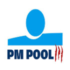
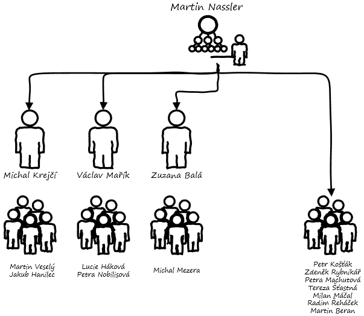

 Business is like a car. It will not run by itself except downhill
Jeden ze tří týmů projektových manažerů v rámci PM poolu ČSOB. Pokrýváme všechny oblasti projektového řízení i obsahové oblasti jednotlivých domén jako Payments, Credits, Consumer Finance, Digital, Karty, SME/CORP apod. Rozumíme ICT, pomůžeme s procesy a provedeme Vás projektem od "a až do z". Kontakt: Martin Nassler, 724 635 893, marnassler@csob.cz
Náš cíl:
Naším cílem je poskytovat dlouhodobě kvalitní služby v rámci celé skupiny ČSOB, mít spokojené zákazníky (externí i interní) a být v ČSOB i mimo ní referencí projektového řízení. Mezi naše hodnoty patří důvěra, spolupráce, rozvoj, kvalita a ownership.
Organizace týmu:
V rámci organizace týmu využíváme tzv. T-shape model, kdy se několik kolegů specializuje do hloubky na oblast jednotlivých domén, zatímco ostatní poskytují více universální služby v rámci projektů skrze celou banku. Zároveň máme v týmu další specialisty, kteří se mimo obsah věnují i ostatním oblastem projektového řízení jako např. nástrojová podpora, řízení kvality, projektové metodice apod. Díky tomu dokážeme pokrýt a kvalitně odřídit kompletní portfolio projektů ČSOB.
